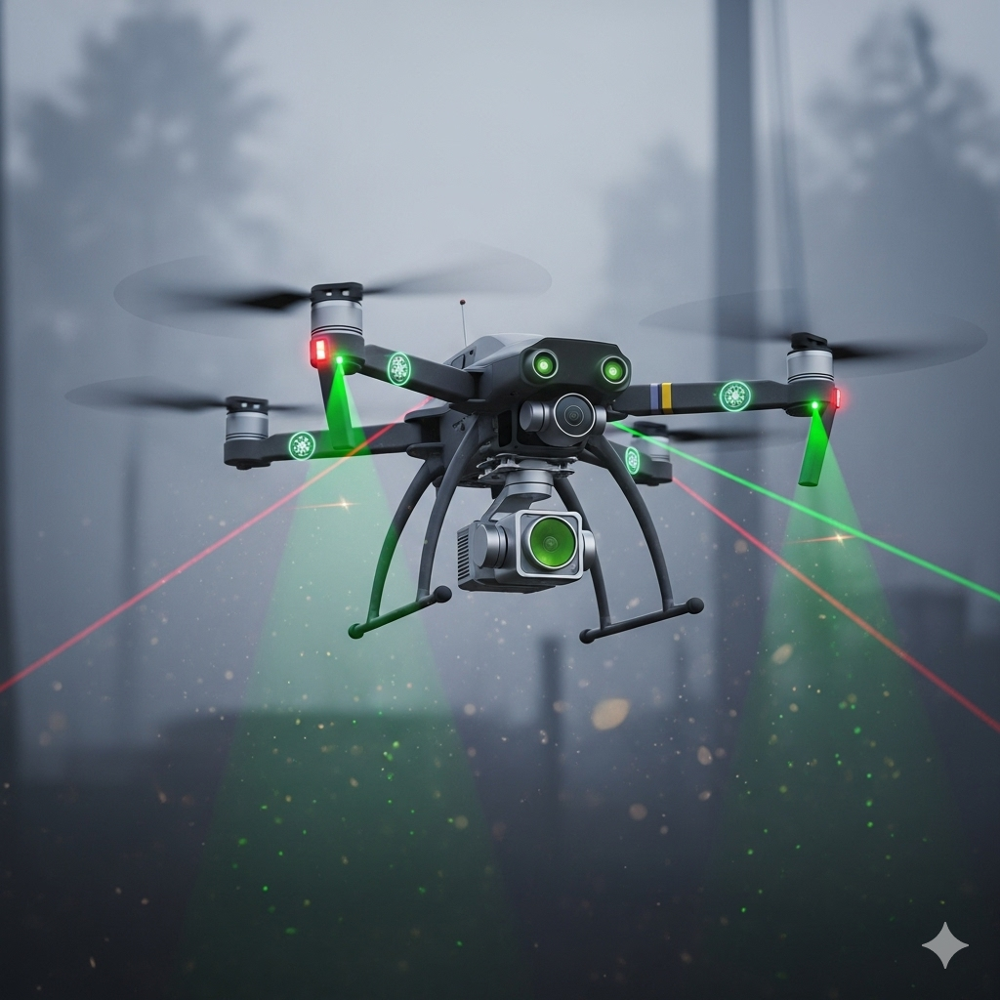
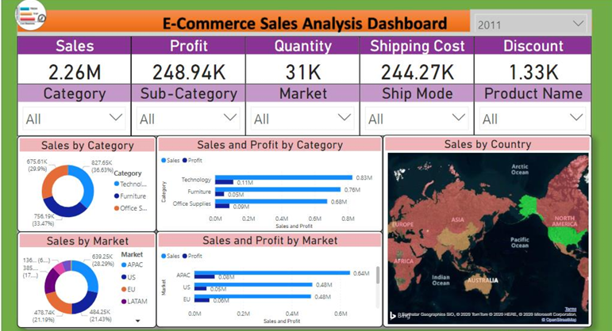
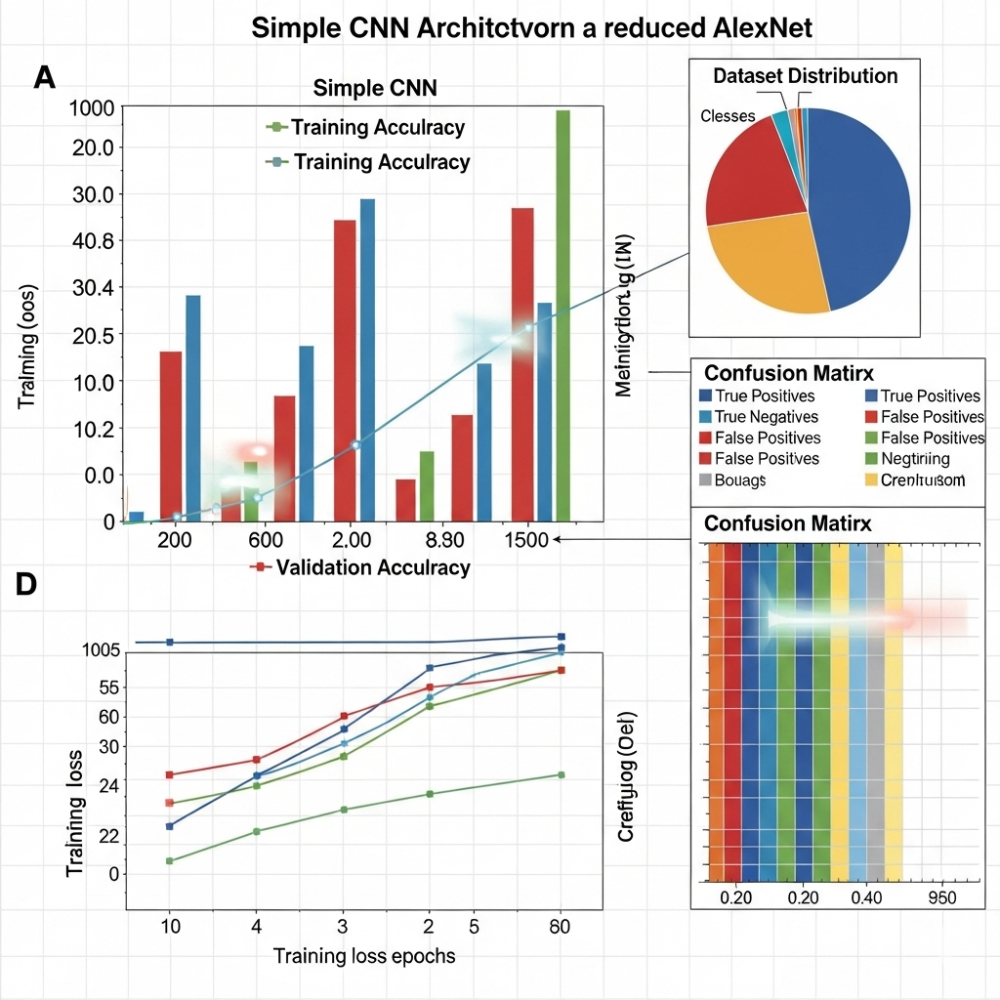

Personal Information
- Name: Bhargav M
- Profile: Student | Tech Enthusiast | Aspiring Data Science Engineer | Full Stack Developer
- Location: Bangalore, Karnataka, India
- Email: bhargav.m23@iiits.in
I am a passionate learner with a strong interest in software development, data science, and problem-solving. I enjoy exploring new technologies, building creative projects, and applying my knowledge to real-world challenges. My goal is to continuously grow technically and personally while contributing to impactful projects.
Education
- B.Tech in Computer Science – IIIT Sricity (2023 - 2027)
- Intermediate – BGS PU College (2020 - 2022)
Skills
- Python
- C and C++
- SQL
- Machine Learning
- Web Development
- DSA (Data Structures and Algorithms)
- Power BI
Reflections / Personal Statement
I strongly believe that learning is a lifelong journey, and I am passionate about exploring how technology can solve real-world problems. My interest in software development and data science comes from my curiosity to analyze data, build innovative solutions, and make informed decisions that have a meaningful impact.
I enjoy working on projects that challenge me to think critically, whether it's developing a full-stack application, designing efficient algorithms, or applying machine learning techniques. Collaboration excites me because sharing ideas and learning from others makes me grow faster as a developer.
My goal is to become a skilled Data Science Engineer and Full-Stack Developer, contributing to projects that improve people's lives. I aspire to work on problems involving AI, automation, and data-driven decision-making while continuing to learn and adapt to new technologies.
Samples of Work
Cross-Modal Perception Drone
Drone navigation in low-visibility environments using camera and sensor fusion (ultrasonic + infrared).
View Code on GitHub Power BI Projects on Real-World Data
Analyzed datasets using Power BI to create interactive dashboards and visualizations for insights extraction.
View Projects on GitHub MNIST CNN + AlexNet Comparison
Compared a simple CNN architecture with AlexNet on a reduced CIFAR-10 dataset, analyzing performance and accuracy.
Read Report Extracurricular & Volunteering
- Practice of coding – FreeCodeCamp projects and challenges
- Volunteer – Photography Club, organizing events and workshops
- Volunteer – Meraki Club, organizing events
- Playing Chess and Carrom
Resume
Contact
Email: bhargav.m23@iiits.in
LinkedIn: Connect with me
Phone: +91-7795036940